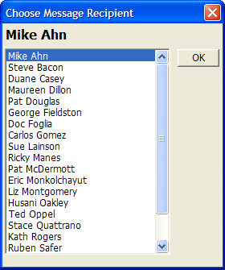

Global Scripts - Learning Xbasic
At the beginning of the book, you saw the script Choose Msg Receiver which is part of the Phone Messages database. Choose Msg Receiver is used when you take a message using the Its For You application. The script is invoked when you press the For button on the Take A Message screen. The script pops-up a dialog box as shown below:

Figure 77
This script is not a function nor is it attached to an object event. Most of the scripts you have analyzed up until now have been one of these two types. Choose Msg Receiver is a Global Script. It was created in the Code Editor by using the N ew > Script using Xbasic editor command. Like a global function, it is accessible (callable) from any other script in the active database.
Unlike a function, a script does not take input parameters, nor does it return a result. But as you saw in the section on variable scoping, data can be passed to a script via shared and global variables.
Generally, you would create a global script when you want to create an Xbasic program that you can invoke in different places of your application or even share among applications. Even if you change the script slightly to accommodate different needs, it is convenient to keep the script as a separate entity (rather than attached to a specific event).
The Choose Msg Receiver script is invoked from the OnPush event of the For button with this Xbasic command.
|
script_play_local("Choose Msg Receiver") |
|
The script_play command loads and runs the Xbasic commands contained in the named script. The script_play_local command makes any local variables in the calling script available to the called script. See Variable Scoping in this book for more information. |
The Choose Msg Receiver script displays a list of message recipients from the message_tr table. When a recipient has been selected, fields in the Take Message form are updated to reflect the name and id of the recipient.
The script performs the following actions:
It declares a number of variables used in the script.
It checks the number of entries in the message_tr table and defines and initializes array variables to hold data from the table.
An Xdialog command opens the pop-up Xdialog box and displays the choices from the array variables.
After a selection is made in the Xdialog box, some fields on the Take Message form are updated.
The complete script along with an analysis of how it works follows.
Various variables used in the script are declared using dim commands. These variables are all local to this script and are discarded when the script is finished running.
|
dim rc as N dim selection as C dim i as N dim indx as N |
A count of the number of records in the message_tr table is stored in the rc variable. This count is necessary so that the next two array variables, names and nameslist can be declared big enough to accommodate all the records in message_tr.
|
rc = reccount("message_tr") |
names is an array variable of type pointer. nameslist is an variable array of type character. names will be populated with all the field information for each record of message_tr. nameslist will then be populated from the data stored in names.
|
dim namesrc as P dim nameslistrc as C |
|
Variable arrays are multidimensional and accessed via their index. So a variable declared as dim myvariable3 as C is declaring myvariable to be an array variable holding up to three possible values (sort of three similar variables accessed with the same name). Each value is assigned and accessed using the appropriate index value. Different array variable values are called elements of the array. myvariable1 = The myvariable2 = Big myvariable3 = Chill ? myvariable2 = big Variable arrays are useful for storing lists of items. The nameslist character array above will store message receiver names: ? nameslist = 1 = "Mike Ahn" 2 = "Steve Bacon" 3 = "George Bush" 4 = "Duane Casey" 5 = "Hill Clinton" 6 = "Pat Douglas" 7 = "Doc Foglia" This is how the namelist array would appear in the Interactive window. From this listing you can see that: nameslist2 = "Steve Bacon" nameslist6 = "Pat Douglas" |
|
Pointer arrays can extend in two dimensions. A pointer array variable can be used to load all the field data of a table by record number. When a pointer array is loaded using the appropriate Xbasic command (e.g. initialize_from_table ) each index entry of the array represents a row from the table. Each array element points to a string for each table row of every field name from the table and the fields corresponding data. The field names and values from the database become properties of each array element. Data is then accessible from the variable array by index (element) value (which displays all the properties) or by specifying the array element property you are interested in. ? names1 = TR_ADMINISTRATOR = .F. TR_FAMILIAR = "Mike" TR_FIRST_NAME = "Michael" TR_ID = "003" TR_LAST_NAME = "Ahn" TR_MIDDLE_NAME = "K." TR_PASSWORD = "password" TR_SALUTATION = "Mr." TR_SUFFIX = "" ? names2 = TR_ADMINISTRATOR = .T. TR_FAMILIAR = "Steve" TR_FIRST_NAME = "Steven" TR_ID = "013" TR_LAST_NAME = "Bacon" TR_MIDDLE_NAME = "" TR_PASSWORD = "password" TR_SALUTATION = "" TR_SUFFIX = "" . . . Pointer array variable values are accessible via their index value as shown at left or by their property. (Each field from the source table becomes a property of each pointer array element). So you can access the following variable values: ? names2.TR_LAST_NAME = "Bacon" ? names8.TR_FIRST_NAME = "Carlos" ? names1.TR_FAMILIAR = "Mike" |
This command fills the pointer array names with data from the message_tr table. All records are loaded (the second parameter is a filter) and they are ordered by the tr_last_name field (the third parameter).
|
names.initialize_from_table("message_tr", ".T.", "tr_last_name") |
This loop cycles through the number of records in message_tr and using the fullfamiliarname() function loads each element of the nameslist array with the character string of the persons familiar name. The parameters for the fullfamiliarname() function are read from the appropriate property values of the names array (which was in turn populated with data from the table itself by the command above).
|
for i = 1 to rc nameslisti = fullfamiliarname(namesi.tr_familiar, namesi.tr_last_name) next |
The variable selection is set to the first name stored in the nameslist array. Selection is used in the following ui_dlg_box() command to hold the value selected from the list box. By setting it before ui_dlg_box() is called, you can control the initial value highlighted in the list box.
|
selection = nameslist1 ui_dlg_box("Choose Message Recipient",<<%a% {Xsize=2} {position=remember} {font=tahoma,12,bold} {text=35,2selection}; {font=tahoma,9} .40,20selection^#nameslist!change||<&OK!ok_button> %a%,<<%b% if a_dlg_button = "change" then indx = nameslist.find(selection) a_dlg_button = "" else if a_dlg_button = "OK" then end if %b%) |
The ui_dlg_box() command is what actually pops-up the Xdialog box on the screen and accepts the user input. To learn all about the details of the writing an Xdialog command please refer to Learning Xdialog.
|
topparent:tr_id.value = namesindx.tr_id topparent:reciever.refresh() |
Next